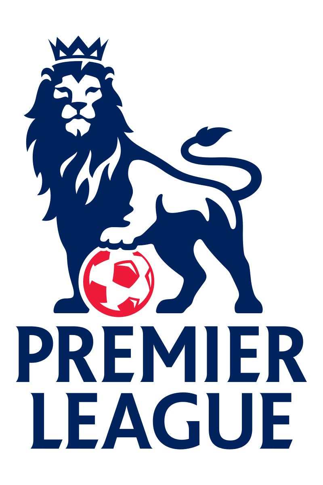

BEST OF BARCLAYS
Inspired by the recent wave of nostalgia during the first international break of the season, I decided to make my own ALL-TIME Barclays Premier League XI.
WARNING: Many of yours, and even my favourites WILL miss out, as there's just too many to choose from!
The Dream Team
Rules for this draft:
- 1 player per club
- Use 442, the formation that defines this era.